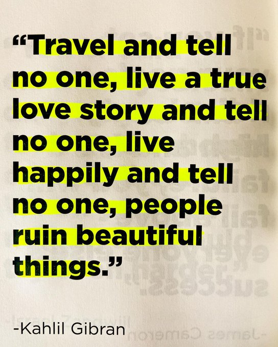
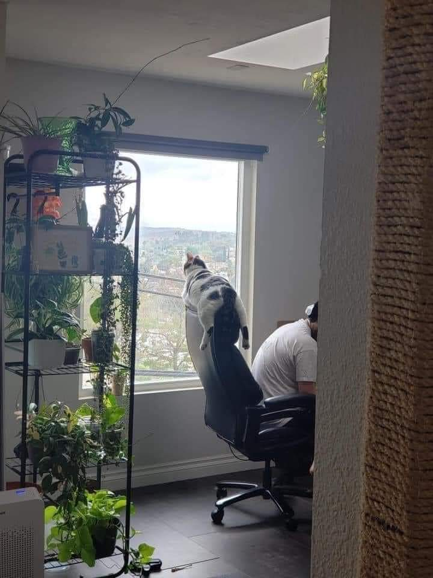

Belajar dari HTML

- Mei
- @meimei
Beranda
SENTINEL @sentinel • 7 menit yang lalu

Psikologmu @psikolot • 7 menit yang lalu
Hard Truths of Psychology and Life:


SENTINEL @sentinel • 7 menit yang lalu
The stars align
Samsudin Official @samsudien • 7 menit yang lalu
Chillin like a villain

Trend untuk Anda
Popular di Indonesia
BEM UNEJ Bangkit 6556 Tweet
Popular di Indonesia
Gak bahaya ta 1112 Tweet
Popular di Indonesia
Warjo Mastrip 5552 Tweet
Popular di Indonesia
Stop Narkoba 7487 Tweet